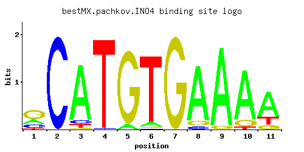

INO4
YOL108C
Transcription factor required for derepression of inositol-choline-regulated genes involved in phospholipid synthesis; forms a complex, with Ino2p, that binds the inositol-choline-responsive element through a basic helix-loop-helix domain
Best-performing DNA-binding model.

View and copy the recommended matrices ↘
A | 0.244 0.002 0.878 0.001 0.061 0.058 0.001 0.870 0.953 0.838 0.671 C | 0.210 0.998 0.057 0.015 0.001 0.006 0.001 0.049 0.001 0.001 0.001 G | 0.515 0.001 0.015 0.001 0.939 0.020 1.000 0.081 0.047 0.121 0.126 T | 0.031 0.001 0.049 0.985 0.001 0.916 0.001 0.001 0.001 0.041 0.203
A | 24 0 87 0 6 5 0 87 95 83 67 C | 21 99 5 1 0 0 0 4 0 0 0 G | 51 0 1 0 93 2 100 8 4 12 12 T | 3 0 4 98 0 91 0 0 0 4 20
A | -0.27 -5.08 1.01 -5.77 -1.66 -1.71 -5.77 1.00 1.09 0.96 0.74 C | 0.15 1.71 -1.15 -2.48 -5.19 -3.40 -5.19 -1.30 -5.19 -5.19 -5.19 G | 1.05 -5.19 -2.48 -5.19 1.65 -2.20 1.71 -0.80 -1.34 -0.40 -0.36 T | -2.33 -5.77 -1.88 1.12 -5.77 1.05 -5.77 -5.77 -5.77 -2.05 -0.46
Alternative candidate matrices 4
Historical matrix candidates from the original ScerTF database. Expand a source to inspect its original logo, scores, and matrix values.
INO4Foat et. al.P = 2.67e-16View matrix ↘
INO4Harbison et. al.P = 6.80e-24View matrix ↘
INO4Macisaac et. alP = 7.45e-23View matrix ↘
INO4Morozov et. al.P = 7.19e-23View matrix ↘
Gene-level annotations and interactions.
Genes bound in ChIP-chip experiments 194 genes
YAL053W, YAL054C, YBL106C, YBR029C, YBR030W, YBR066C, YBR083W, YBR085C-A, YBR120C, YBR121C, YBR144C, YBR145W, YBR158W, YBR238C, YCR034W, YCR057C, YCR064C, YCR065W, YCR098C, YDL049C, YDL080C, YDL124W, YDL125C, YDL136W, YDL141W, YDL142C, YDR050C, YDR072C, YDR073W, YDR085C, YDR129C, YDR146C, YDR147W, YDR169C, YDR274C, YDR275W, YDR278C, YDR297W, YDR312W, YDR343C, YDR345C, YDR384C, YDR385W, YDR438W, YDR451C, YDR452W, YDR497C, YDR498C, YDR499W, YDR508C, YDR510W, YEL040W, YER017C, YER026C, YER033C, YER034W, YER035W, YER043C, YER045C, YER062C, YER063W, YER091C, YER092W, YER158C, YFL017W-A, YFL018C, YFR015C, YGL077C, YGL116W, YGL184C, YGR050C, YGR055W, YGR123C, YGR154C, YGR155W, YGR157W, YGR169C, YGR170W, YGR177C, YGR189C, YGR196C, YGR233C, YGR238C, YHL004W, YHL007C, YHR067W, YHR096C, YHR123W, YIL099W, YIL119C, YJL048C, YJL078C, YJL117W, YJL119C, YJL140W, YJL141C, YJL142C, YJL152W, YJL153C, YJL167W, YJL168C, YJR008W, YJR104C, YJR105W, YJR127C, YJR145C, YJR146W, YJR147W, YKL060C, YKL062W, YKL081W, YKL082C, YKL110C, YKL128C, YKL182W, YKR093W, YLR018C, YLR019W, YLR034C, YLR044C, YLR108C, YLR109W, YLR132C, YLR133W, YLR249W, YLR253W, YLR347C, YLR349W, YLR351C, YLR352W, YLR370C, YLR371W, YLR378C, YLR380W, YML006C, YML075C, YMR037C, YMR043W, YMR070W, YMR084W, YMR135C, YMR136W, YMR186W, YMR195W, YMR301C, YMR306C-A, YMR307W, YMR316C-A, YMR317W, YMR319C, YNL015W, YNL043C, YNL044W, YNL080C, YNL090W, YNL101W, YNL103W, YNL104C, YNL129W, YNL130C, YNL144C, YNL155W, YNL156C, YNL169C, YNL171C, YNL175C, YNL178W, YNL246W, YNL306W, YNL307C, YNR016C, YNR017W, YOL010W, YOL027C, YOR032C, YOR064C, YOR065W, YOR230W, YOR234C, YOR316C, YOR317W, YOR344C, YPL056C, YPL090C, YPL155C, YPL231W, YPR013C, YPR023C, YPR024W, YPR028W, YPR035W, YPR115W, YPR124W, YPR195C
Genes affected by TF deletion 95 genes
YHL014C, YMR012W, YOL045W, YPL207W, YDR217C, YJL082W, YJL116C, YMR159C, YPL016W, YOL108C, YDL158C, YDR308C, YGR244C, YJL099W, YFL011W, YGR058W, YOL107W, YCL012W, YKL171W, YIL055C, YGL175C, YKR051W, YLR131C, YHR154W, YMR234W, YNL217W, YNR070W, YKR023W, YJL090C, YML005W, YOR386W, YPR119W, YHR089C, YIR042C, YLR005W, YDR290W, YGR226C, YKL182W, YOL113W, YDL169C, YJL184W, YJL222W, YER137C, YDR048C, YBR177C, YGL029W, YLR078C, YJR161C, YPR195C, YER099C, YLR168C, YBL042C, YBR022W, YDR088C, YDR058C, YDR092W, YDR034C, YDR390C, YDR422C, YER135C, YJR108W, YJR110W, YMR037C, YNL105W, YEL035C, YBR185C, YDL090C, YGL003C, YGL035C, YHR168W, YKL097C, YKL072W, YKL103C, YJR043C, YKR068C, YAL061W, YFR057W, YJL108C, YKL130C, YJL045W, YLL054C, YNL205C, YBL013W, YGR206W, YIL072W, YGR056W, YJL039C, YKL034W, YPR071W, YBL048W, YGL162W, YJL174W, YLR177W, YNL009W, YOR126C
Genes supported by both experiments 3 genes
YKL182W, YMR037C, YPR195C